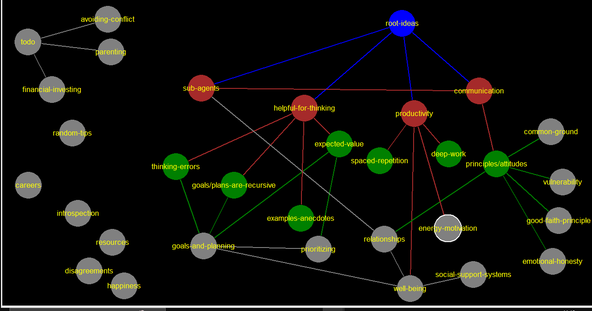

energy-motivation
principles/attitudes
[[emotional-honesty-->emotional-honesty]] [[common-ground-->common-ground]] [[good-faith-principle-->good-faith-principle]] [[vulnerability-->vulnerability]] [[relationships-->relationships]]
well-being
[[social-support-systems-->social-support-systems]]
vulnerability
emotional-honesty
communication
[[sub-agents-->sub-agents]] [[principles/attitudes-->principles/attitudes]]
examples-anecdotes
a huge amount of articles are about showing examples of things to illustrate some pattern or concept. the purpose is (presumably) to prime the reader for recognizing these things in real life. this is maybe the deepest one... and even makes me want to connect all 6 core tags, not just these 3 as a "proof of concept"social-support-systems
bets for productivity ("you get 10 bucks if i get lower than 8/10") after breakup
avoiding-conflict
https://www.lesswrong.com/posts/jkvAYpzjk8DF5tszD/conflict-the-rules-of-engagement-and-professionalism
sub-agents
careers
https://www.lesswrong.com/tag/careers
parenting
https://www.lesswrong.com/tag/parenting
financial-investing
https://www.lesswrong.com/tag/financial-investing
todo
[[financial-investing-->financial-investing]] [[parenting-->parenting]] [[career-->career]] [[avoiding-conflict-->avoiding-conflict]] todo in https://www.lesswrong.com/posts/AvjbBjAAbKBk73v5F/relationship-advice-repository - attachment styles - power differences - age differences
random-tips
planning fallacy problem: people are bad at planning advice: look at similar projects, dont think about the details https://www.lesswrong.com/posts/CPm5LTwHrvBJCa9h5/planning-fallacy uncertainty slowdown problem: uncertainty causes slowdown solution: commit to choice https://www.lesswrong.com/posts/FMkQtPvzsriQAow5q/the-correct-response-to-uncertainty-is-not-half-speed the 12 virtues of rationality Curiosity - the burning desire to pursue truth; Relinquishment - not being attached to mistaken beliefs; Lightness - updating your beliefs with ease; Evenness - not privileging particular hypotheses in the pursuit of truth; Argument - the will to let one's beliefs be challenged; Empiricism - grounding oneself in observation and prediction; Simplicity - elimination of unnecessary detail in modeling the world; Humility - recognition of one's fallibility; Perfectionism - seeking perfection even if it's not attainable; Precision - seeking narrower statements and not overcorrect; Scholarship - the study of multiple domains and perspectives; The nameless virtue - seeking truth and not the virtues for themselves. https://www.lesswrong.com/posts/7ZqGiPHTpiDMwqMN2/twelve-virtues-of-rationality software and tools https://www.lesswrong.com/tag/software-tools emotions "Contrary to the stereotype, rationality doesn't mean denying emotion. When emotion is appropriate to the reality of the situation, it should be embraced; only when emotion isn't appropriate should it be suppressed." https://www.lesswrong.com/tag/emotions studying tips: - organize information for clarity - cramming doesnt work - set up schedule for studying - test yourself - spaced repetition (use Anki) - for retention: - acrostics: each first letter of a sentence forms a word youre trying to remember - "method of loci": mind palace - link method: "turning information into vivid images, then linking those images together" self help science collection https://www.lesswrong.com/posts/33KewgYhNSxFpbpXg/scientific-self-help-the-state-of-our-knowledge happiness - correlates weakly/none with happines: - age, gender, parenthood, iq, attractiveness, money - correlates moderately with happines: - health, social activity, religiosity - correlates strongly with happines: - genetics, love and relationship satisfaction, work satisfaction dont confuse pain with effort advice: - if it hurts, you're probably doing it wrong - if youre not happy, youre not doing your best (because happiness is very useful) https://www.lesswrong.com/posts/HEn2qiMxk5BggN83J/boring-advice-repository https://www.lesswrong.com/posts/umzNiYpHLypdcXuEf/useful-concepts-repository emotional intimacy share emotions while still taking responsibility for them vulnerability is a general theme in these relationship things dating younger people is no diferent, except it amplifies all pitfalls
productivity
[[spaced-repetition-->spaced-repetition]] [[deep-work-->deep-work]] [[well-being-->well-being]] [[energy/motivation-->energy-motivation]]
deep-work
thinking-errors
[[goals-and-planning-->goals-and-planning]]
helpful-for-thinking
[[plans-are-recursive-->goals/plans-are-recursive]] [[cognitive-bias-->thinking-errors]] [[fallacies-->fallacies]] [[examples-->examples-anecdotes]] [[expected-value-->expected-value]]
introspection
good-faith-principle
common-ground
expected-value
[[goals-and-planning-->goals-and-planning]] [[prioritizing-->prioritizing]]
spaced-repetition
prioritizing
[[goals-and-planning-->goals-and-planning]]
goals/plans-are-recursive
[[goals-and-planning-->goals-and-planning]]
root-ideas
[[ideas-for-better-perspective-->helpful-for-thinking]] [[sub-agents-->sub-agents]] [[communication-->communication]] [[productivity-->productivity]]
disagreements
resources
software tools books
goals-and-planning
[[well-being-->well-being]]
relationships
[[sub-agents-->sub-agents]] [[well-being-->well-being]] in short: be vulnerable, communicate well, be honest, listen and observe without judgement listening: "problem solving vs support" https://www.lesswrong.com/posts/AvjbBjAAbKBk73v5F/relationship-advice-repository a relationship is a negotiated agreement. anecdote: "At the beginning of a recent relationship, we just listed out all the things that we potentially wanted from the relationship. Each of us had a moderately long list, but there wasn't perfect overlap – and that was fine, we were both happy to have a relationship built on the things we both wanted and seek the other elements elsewhere." "Dating Docs" that describe what they're after in a relationship "if you want honesty, dont punish it" "have difficult conversations" (not sure how useful this is) all the rest of the stuff just boils down to: 1) be honest, 2) wish the best for each other focus on observations instead of judgements focusing on people’s underlying needs and making observations instead of judgments can revolutionize the way you interact with anybody, even your worst enemies. - seperate observation from judgement - Connecting actions and requests to people’s specific needs - you can use this on yourself too (subagents)
happiness
css [stylesheet]